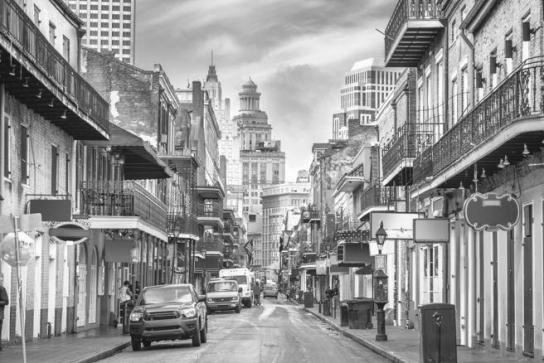
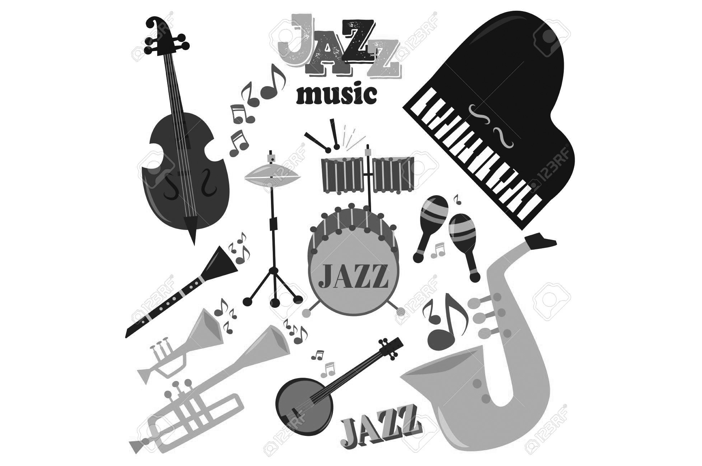
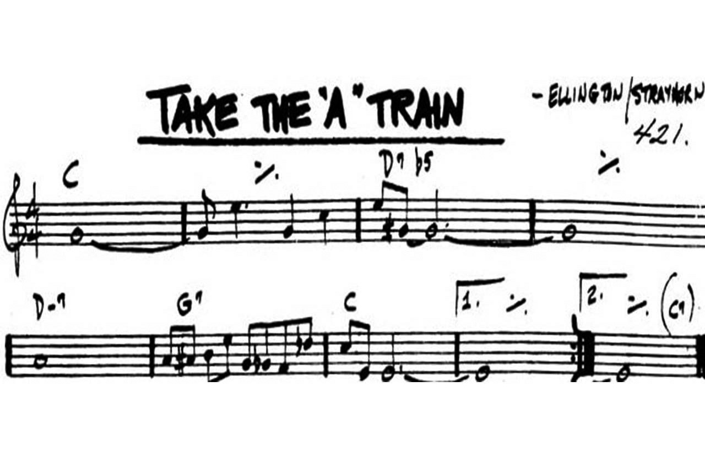

Ciudades más Jazzeras de EEUU
Boston, Massachusetts: Florecimiento en los años cuarenta y más
Nueva Orleans, Luisiana: La cuna del Jazz
Kansas City, Misuri: El jazz echa raíces
Chicago, Illinois: La migración musical
Nueva York, Nueva York: La meca del jazz
Chattanooga, Tennessee: Jazz para las masas
Seattle, Washington: Una historia de música

Instrumentos para Jazz
Los instrumentos más habituales son la corneta, la trompeta, el trombón, el saxofón, la tuba y el fliscorno (viento metal), el clarinete (viento madera), el contrabajo (cuerda), la batería (percusión membrana), el piano (cuerda y tecla) y la voz.

La mejor canción de Jazz
Take the A Train podría no haberse escuchado jamás y hoy no sería una de las canciones más famosas de El Duque del Jazz si este no hubiese mantenido una abierta batalla con la ASCAP -la SGAE
norteamericana-.
Escuchar en Youtube
Ciudades más Jazzeras de EEUU
Boston, Massachusetts: Florecimiento en los años cuarenta y más
Nueva Orleans, Luisiana: La cuna del Jazz
Kansas City, Misuri: El jazz echa raíces
Chicago, Illinois: La migración musical
Nueva York, Nueva York: La meca del jazz
Chattanooga, Tennessee: Jazz para las masas
Seattle, Washington: Una historia de música